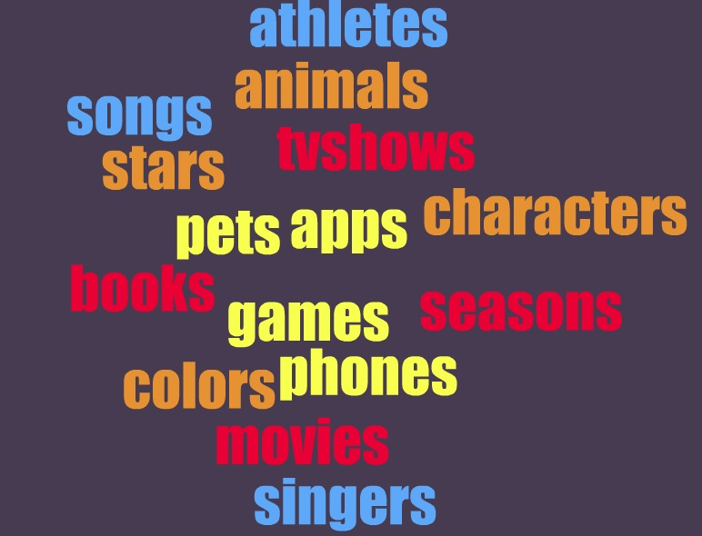

Teaching Point:
Today we will make our first Spreadsheet in Microsoft Excel
Favorite Things
Today we are going to start practicing using Spreadsheets to make a list. In Excel, we are going to make a list of 5 of our favorite things in any category. You will use this as a survey later - a survey is when you ask other people about how they feel, and record the results.
Everyone needs to pick a topic for their survey. You can make a list of your favorite sports teams, favorite pets, favorite TV Shows, favorite video games and apps, favorite places, or anything else you can think of. You will then ask your classmates which thing from the list they like the best. Does anyone have any ideas for what they want to make their survey about?
Your survey should follow these instructions:
- To Start a new Spreadsheet, click on Microsoft Excel. When the choices menu shows up, choose Workbook.
- Your question should be "What is your favorite..." and go in cell A1
- All of your choices should go in column a and start at cell A3. So your choices should be written in cells A3, A4, A5, A6, and so on. You need at least 5 choices.
Today's Assignment
Begin making your survey in Microsoft Excel. Save your work on your Desktop and name it "Your Name Survey"
Extension Activity
Use your Formatting skills to make your survey look nice. Formatting in Microsoft Excel is the same as formatting in Microsoft Word. See the video below.
Back to School Portal